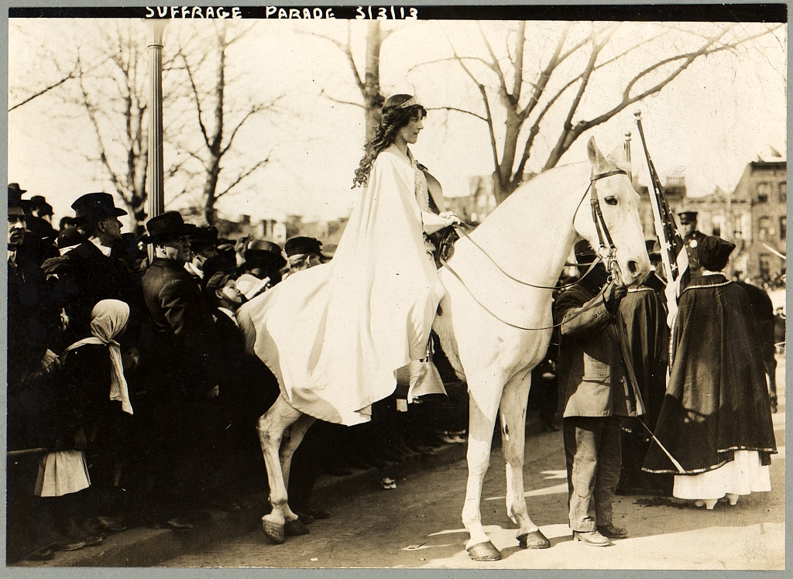
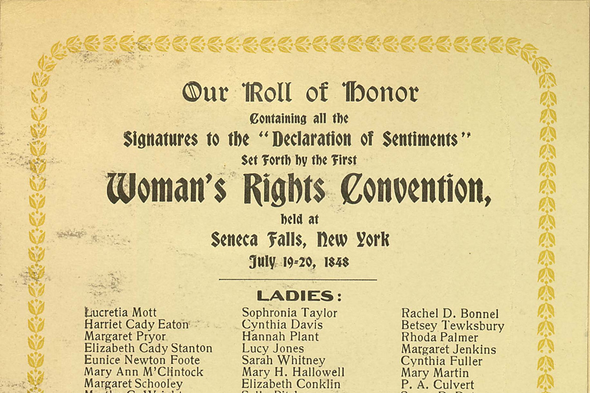
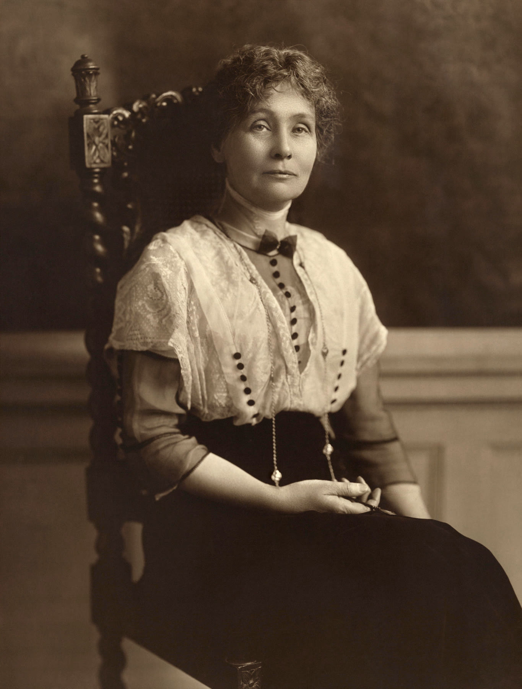
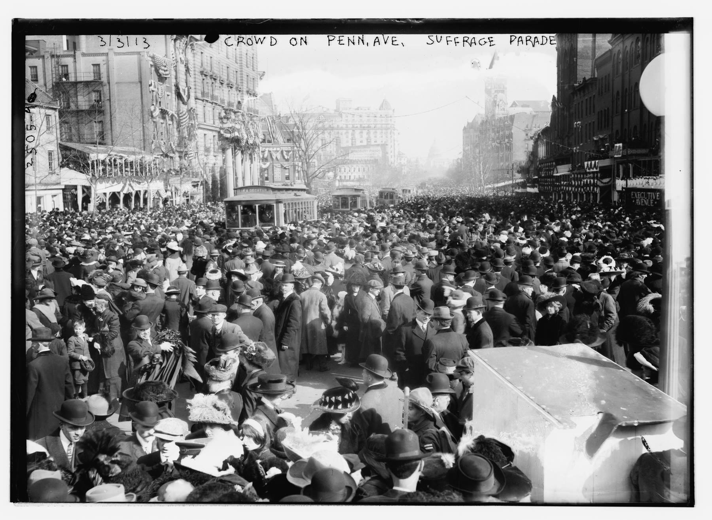
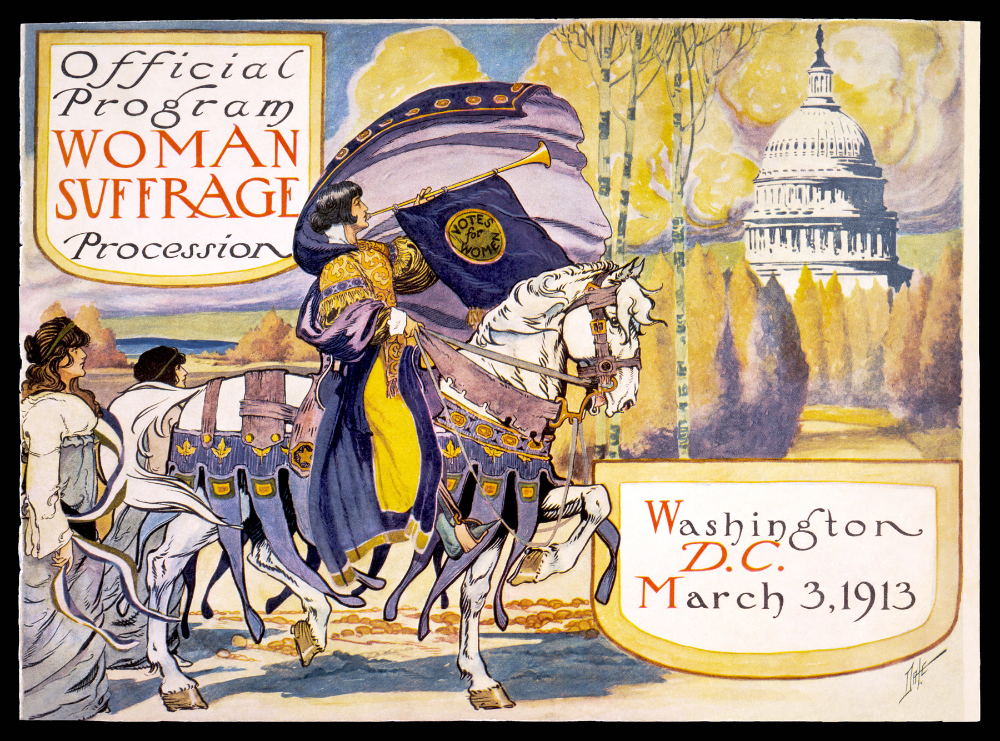
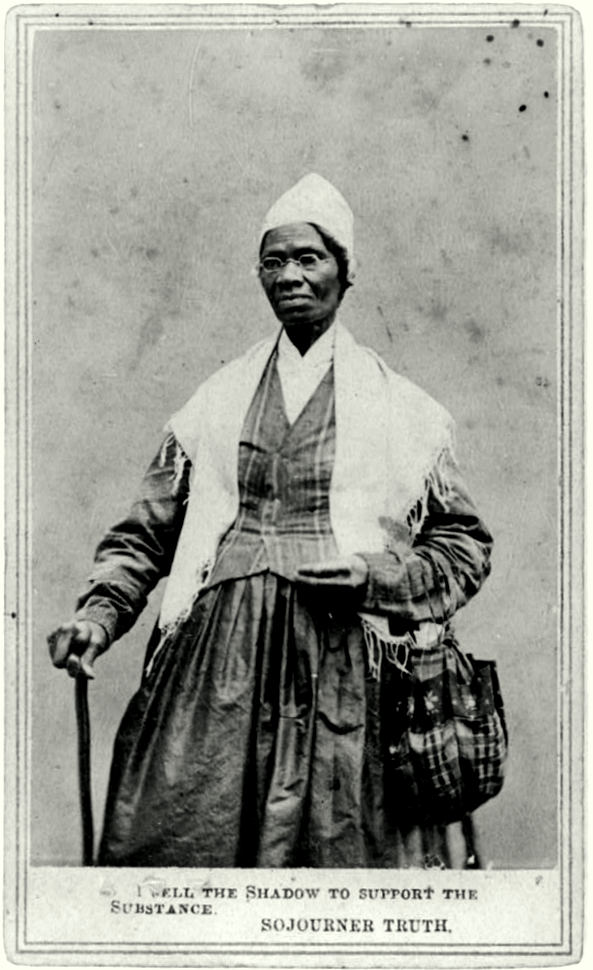
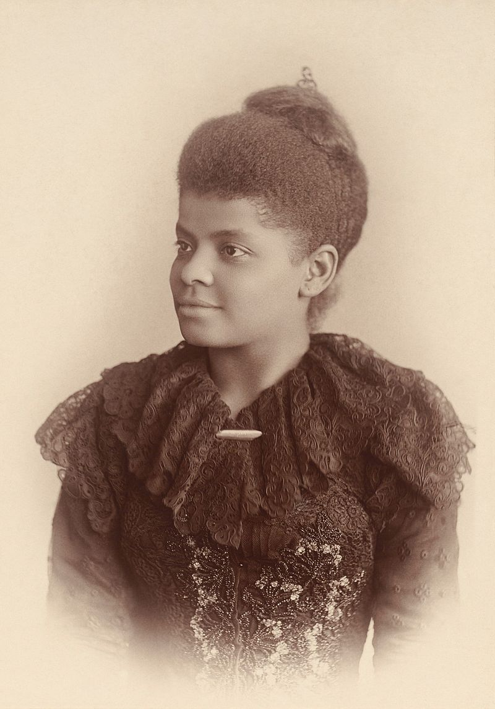
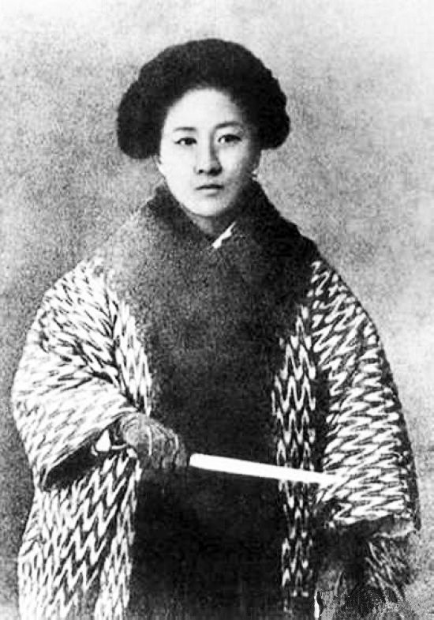

Monday · Feminism
First Wave (c. 1848–1920): the fight over whether women counted as political persons
From to the , women in the United States and Britain organized for the vote and for legal standing. The movement split over race, tactics, and who was included when organizers said “we.”

“First wave” is a later Anglo-American classroom name. The people in this lesson did not call themselves that. The label is useful because it groups several decades of public campaigns over whether women counted as political persons. It is incomplete as a history, because those campaigns were not only Anglo-American, and because they did not include every woman they claimed to speak for. What follows uses the usual dates, then looks at the same years in China.
Select any words, or tap a dotted term.
- 1848 Seneca Falls A two-day convention in , New York, issued the . The vote was one demand among many legal and social grievances.
- 1851 Akron Sojourner Truth spoke at a women’s rights meeting in Akron, Ohio. The famous refrain “Ain’t I a woman?” comes from a later rewrite of that speech.
- 1870 The split The barred denying the vote because of race, not sex. Stanton and Anthony opposed ratifying it without women; Stone and Douglass would not block Black men’s suffrage in order to wait.
- 1907 Anqing Qiu Jin was executed after an uprising in Anqing. She was working in the same decade as British militant suffragettes, under a different government.
- 1913 Procession / Derby On 3 March, and Lucy Burns organized a suffrage procession in Washington, D.C. In June, Emily Wilding Davison died after stepping onto the course at the Epsom Derby.
- 1920 Nineteenth Amendment The United States barred denying the vote because of sex. Poll taxes, literacy tests, and violence still blocked many Black women in the South.
Before
Married women had no separate legal self, and abolition trained the organizers
Under English common law, a married woman’s legal identity was absorbed into her husband’s. The doctrine is called . Her property, her contracts, and her wages belonged to him unless a statute carved out an exception. An unmarried woman had more legal room. Marriage closed it. In the United States, states began to pass in the 1840s — New York’s 1848 statute is the usual example — but those laws were limited, uneven, and did not make a wife a full legal person.
Industrial work had already left the house. What remained, for middle-class white women, was a public story about respectability: the home as a moral refuge, the woman as domestic, delicate, and good. Historians call this “.” It was a rule of class as much as of sex. Enslaved women, and women who worked for wages, were never offered that protected private role. They were already in public as labor, as property, or as exceptions the ideology did not have to explain.
Abolition was the training ground for many United States feminists. In anti-slavery societies they learned to petition legislatures, lecture to mixed audiences, edit newspapers, and run a meeting. Those skills transferred to women’s rights. The alliance later cracked, after the Civil War, when the question became which emancipation would be allowed to go first: Black men’s suffrage, or women’s.
The era
Seneca Falls, the Fifteenth Amendment split, and the 1913 parade
On 19–20 July 1848, at , New York, a convention issued a modeled on the Declaration of Independence. Elizabeth Cady Stanton was the principal author; Lucretia Mott was among the organizers. The vote was one grievance among others — property, divorce, education, and public speech. Not everyone in the room wanted the vote named first. The document still did something new in American public life: it treated women as people who could claim the same political rights the United States had already claimed for men.

In 1851 Sojourner Truth spoke at a women’s rights meeting in Akron, Ohio. The famous refrain “Ain’t I a woman?” comes from ’s 1863 rewrite of that speech. Contemporary 1851 newspaper accounts do not use the refrain that way. The later version is the one that traveled in print. The historical point does not depend on the catchphrase. A feminism built on white middle-class delicacy treated enslaved women and working women as exceptions — people whose bodies had already been asked to do too much to count as the “woman” the movement was picturing.
After the Civil War the coalition split over the , ratified in 1870, which barred denying the vote “on account of race, color, or previous condition of servitude.” It did not mention sex. In 1869 Elizabeth Cady Stanton and Susan B. Anthony founded the and opposed ratifying the amendment without women. Lucy Stone and others founded the and would not block Black men’s suffrage in order to wait. Frederick Douglass, who had supported women’s rights at , took Stone’s side on sequence. The argument was about order, and about who was being asked to stand aside. The two organizations did not merge into the until 1890.
In Britain the movement divided by method. Constitutional suffragists collected signatures and lobbied Parliament. The militant , founded in 1903 by Emmeline Pankhurst, broke windows, disrupted meetings, and, in prison, went on hunger strike. The Liberal government answered with , then with the 1913 — the “” — which released weakened prisoners and rearrested them when they recovered. In June 1913 Emily Wilding Davison died after stepping onto the course at the Epsom Derby in front of the king’s horse.

.jpg){kind=link}
On 3 March 1913, the day before Wilson’s inauguration, and Lucy Burns organized the Woman Suffrage Procession in Washington, D.C. Inez Milholland rode in white on a white horse at the head of the line. Black women were told to march in a rear contingent. Ida B. Wells refused. She waited until the Illinois delegation passed, then stepped into that line and marched with her state.


The was ratified in 1920. It says the right to vote shall not be denied on account of sex. It did not repeal . Many Black women in the South were still blocked by poll taxes, literacy tests, and violence. The amendment changed the federal text. The local machinery that decided who could actually cast a ballot did not change with it.
The same years, in a different country: Qiu Jin 秋瑾 (1875–1907). She unbound her feet, left an arranged marriage, studied in Japan from 1904, and in 1907 edited (the ) in Shanghai. The journal argued for women’s education and against bound feet in the same pages as anti-Qing politics. After ’s uprising in Anqing failed, she was arrested and executed. Her public life does not sit on a line from to 1920. It belongs in the same decades anyway: a woman deciding she would count in public, under a different state, and paying for it with her life.
People
Four people the usual story has to include

Sojourner Truth
c. 1797–1883
Born enslaved in New York. She sold captioned “I sell the shadow to support the substance.” The card was a living: lectures did not pay enough, and she needed the sales. It was also a legal claim. She copyrighted the image in her own name, which was unusual for a sitter, and still more unusual for a woman who had been treated as property.
, 1864, printed with her own line: “I sell the shadow to support the substance.”Library of Congress / public domain

Ida B. Wells
1862–1931
Anti-lynching journalist; Southern Horrors appeared in 1892. She treated suffrage and racial terror as one fight, which is why a segregated parade order in 1913 was not a small slight. She refused the rear contingent and walked into the Illinois line as it passed.
Ida B. Wells-Barnett, photographed by Mary Garrity around 1893.Wikimedia Commons / public domain
{kind=link}
Inez Milholland
1886–1916
Lawyer, and the image the 1913 procession needed at its head. She died in 1916 on a western suffrage tour, at thirty. The photograph of her on the white horse outlived the campaign she was riding for.
Milholland on Pennsylvania Avenue, 3 March 1913: white cape, white horse, a planned public image.Library of Congress / public domain

Qiu Jin 秋瑾
1875–1907
Unbound feet, study in Japan, editor of , executed after the 1907 Anqing uprising. If the phrase “first wave” cannot hold her, the phrase is too narrow. Her life is not the problem.
Qiu Jin, photographed between 1900 and 1907, in the last years of the Qing dynasty.Wikimedia Commons / public domain
{kind=link}
A story
“I sell the shadow to support the substance”
Truth sold her image because lectures did not pay enough. On the card, the “shadow” is the photograph — a thing that can be reproduced, captioned, and passed from hand to hand. The “substance” is the work, and the body that had been treated as property. She put the sentence on the card in English, under her own name, and made the sale part of the argument: I will be paid for the copy of me that you can hold.
Keep the card in mind when a movement talks about “women” as if the category were already settled. Someone is always deciding which body is the subject of the campaign, and which body is only used to illustrate it.
After
After 1920 the coalition thinned, and a later generation named a second wave
In the United States the 1920s through the 1950s are often called the “”: the vote arrived, and the suffrage coalition thinned. The word is a later summary, not a name people used at the time. It describes a particular organized feminism going quiet. It does not mean the questions ended, and it does not mean every woman had been in that coalition.
What later writers called the second wave — the 1960s and 1970s — turned to the workplace, to sexuality, and to housework. “The personal is political” became a slogan for that turn. The who-counts problem returned in public, including in the Combahee River Collective statement of 1977, which refused to treat race, sex, and class as separate queues.
The wave metaphor itself is a later teaching device. It offers a tidy sequence: first the vote, then the rest. It hides the people who were never in that sequence — and the fights that did not wait for the next numbered period.
A question
A question to keep asking
When a movement says “we,” who is being asked to wait?
Fun fact
She copyrighted her own photograph
In 1864 Sojourner Truth registered the copyright on her own in the U.S. District Court for the Eastern District of Michigan. That was unusual: the photographer usually claimed the image. The cards were printed with her own sentence, “I sell the shadow to support the substance.” She sold them at lectures because lectures did not pay enough. The portrait in this lesson is one of those cards. The “shadow” here is her word for the photograph, not a later flourish.